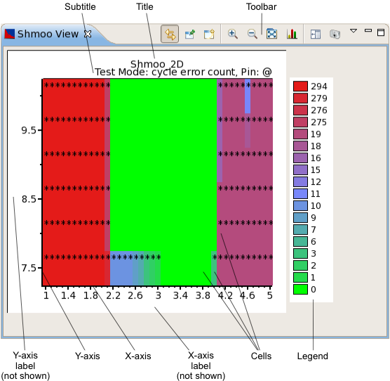
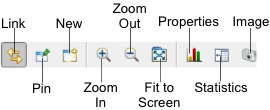
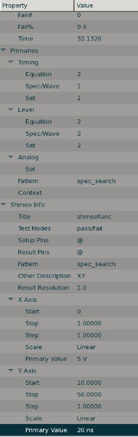

Shmoo view
The shmoo view of the Integrated Result Tool displays the logged results of shmoo test in a shmoo plot.
For parametric shmoo test results, the display can be based on the maximum, mean, or minimum test values or their sums. (This is set with the Accumulation shortcut menu command, described below.)
A shmoo view is opened by choosing from the shortcut menu of a Test summary tab. It can also be opened using the New button (see below) from the toolbar of another shmoo view or using the menu command.

These are the elements in the main area of the chart (for the toolbar and shortcut menu, see below):
- Title: By default,the name of the test being displayed. You can edit this label in the shmoo view properties.
- Subtitle: The subtitle displays the chosen result type and the result pins.
- Y-axis label: By default, this label is not displayed. You can specify a label in the shmoo view properties.
- Y-axis: The axis for one varied shmoo parameter.
- X-axis label: By default, this label is not displayed. You can specify a label in the shmoo view properties.
- X-axis: The axis for the other varied shmoo parameter.
- Cells: Each cell displays a color indicating the pass rate for tests with this pair of shmoo
variables. White cells indicate no data for this (x,y) combination.
If the Show text in cell option in the preferences is set, the pass rate is also displayed as a number in cells that have a pass rate of less than 100%. (These numbers may not be displayed if the chart is very small so that there is not enough space for them.)
- Legend: A description of the meanings of the colors used in the graph. The details depend on the result type chosen; see Shmoo graph modes for more information.
Toolbar

The toolbar of a shmoo view includes these buttons:
- Link: Links the display in the view to the selected row in the data navigation view.
In this mode, if the selection in the data navigation view changes, the display updates automatically.
- Pin: Freezes the display in the view.
In this mode, the view keeps displaying the rows it currently displays, even when the selection in the data navigation view changes. Dynamic updating can be resumed by clicking the Link button.
- New: Creates a new shmoo view.
- Zoom In: Enlarges a section of the chart to show more detail.
- Zoom Out: Reduces the scale of the chart to show more data.
- Fit to Screen: If this button is activated, resizing the view automatically resizes the map in the view as well. If the button is deactivated, the map is always the same size, even if the view is made bigger or smaller.
- Statistics: Shows this shmoo test suite setups and the statistical data about the execution
results such as pass and fail ratios and execution time in a form like the following.

Clicking on the Statistics button again will close this form and switch to the shmoo plot.
- Image: Clicking this button lets you save the current shmoo plot display as a PNG or JPEG image.
Shortcut menu
The shortcut menu of a shmoo view contains these commands:
- Pin: Specifies the pin to display in the shmoo plot.
@ displays all pins, the other commands display the shmoo plot for the pin with that name.
- Test Modes: Specifies the result type to display in the shmoo
plot.
You can choose only result types that have been specified in the setup of the shmoo test you are analyzing.
The commands in the Accumulation submenu see below) change depending on the chosen mode.
- Accumulation: Specifies which value is used for each shmoo plot cell:
- Mean: The value for a cell is the mean of its test values.
- Min: The value for a cell is the minimum of its test values.
- Max: The value for a cell is the maximum of its test values.
- Most frequently failing cycle/vector: The value for a cell is the number of the cycle or vector where the most fails occurred.
- Sum: The value for a cell is the sum of its test values in all
overlaid shmoo tests.
This submenu is displayed only for overlay plots. (An overlay plot requires at least two included rows in the raw data view of the selected test summary.) Some commands are available only for certain test modes (chosen in the Test Modes submenu, above).
- Properties: Opens the Properties dialog for the shmoo view.
Functional changes
- Introduced in SmarTest 7.2.0
- SmarTest 7.2.1: Renamed shortcut menu command Result Types to Test Modes.
- SmarTest 7.2.1: Removed Classes and Cycles submenus from shortcut menu.
- SmarTest 7.2.2: Added option to export charts as JPEG images
- SmarTest 7.2.2: Patch 5, adds Primary Value to both X Axis and Y Axis sections in the Statistics form